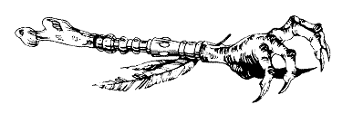

La bibliothèque renferme de nombreux livres de grande valeur, et des sortes de grimoires à l'aspect inquiétant rédigés en des langues inconnues. De toute évidence, le Comte de Brume possède une remarquable collection d'ouvrages consacrés à la magie noire et à l'hypnotisme. Désirez-vous feuilleter l'un de ces livres ? Vous pouvez choisir un volume traitant de magie noire, ou d' hypnotisme.
